2 Oct 2026, late night · the sheet is tree-standard.json beside this page; the tree reads it, the tests read it, nothing is sized to taste any more · pictures are headless walks (software GL, no window) at 1920 × 1080 (Apple TV), 1680 × 1050 at scale 2 (the MacBook) and 390 (phone)
1 · THE SHEET, DRAWN — one block of a sector, every size as a multiple of the box
Everything is measured in U, the tree's own unit. A tradeable's Geiger bar is its box: 96 × 30 U (3.2 : 1, the Hub's bar). Boxes in a row sit 104 U apart (8 U of black between them = a twelfth of the box); rows 36 U apart (6 U between = a fifth of the box's height); sibling blocks 24 U apart (a quarter of a box); one level of the tree 70 U under the one above. The ticker is painted on the box, white, 0.7 of the box's height. On the screen a box prints at its size × the zoom; the 60 × 19 px floor only applies where the slot allows it, so no two boxes ever touch.
2 · THE PAGE BESIDE THE SHEET — what the walks saw
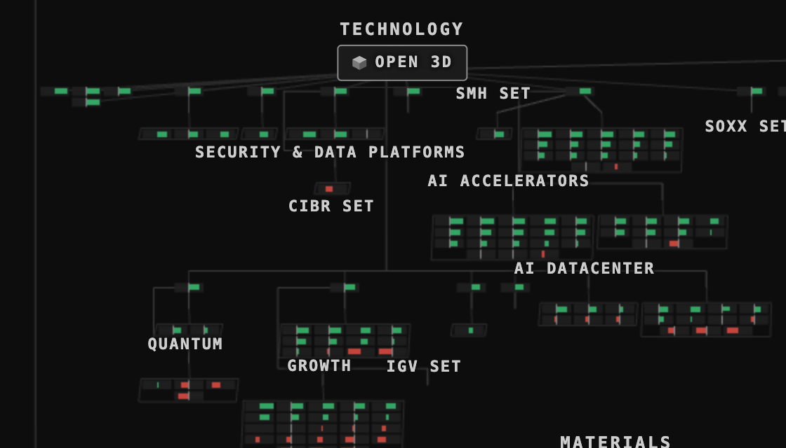
One sector block, Apple TV 1920 (after). Every box is its own size; 8 U of black between neighbours. 0 boxes touch (T9: 2,572 pairs touched). The tickers do not print at this zoom: the box is 20.8 × 6.5 px, under the sheet's 19 px — they come one zoom step in.
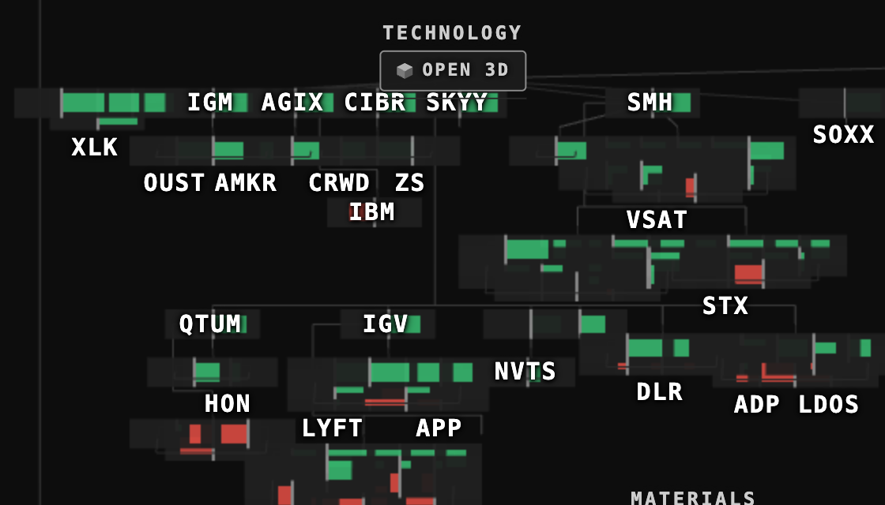
The same block on T9's page (before). Every box forced to 60 × 19 px; the boxes sit on each other and the bars hide behind their neighbours.
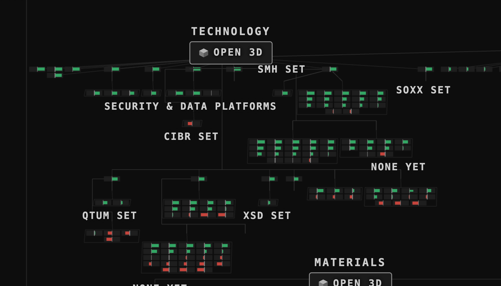
One sector block, the MacBook 1680 @ 2 (after). 18.2 × 5.7 px boxes, 0 touching (T9: 2,919 pairs).
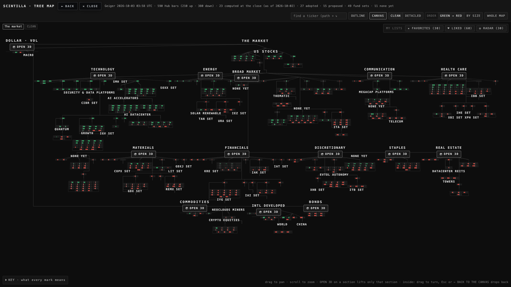
CLEAN, the whole map, 1920. 613 boxes, none touching, 320 boxes per million px². The price: 90 % of the canvas is black (T9: 81 %) — the sheet asks for ≤ 76 %. Not met: see the decisions.
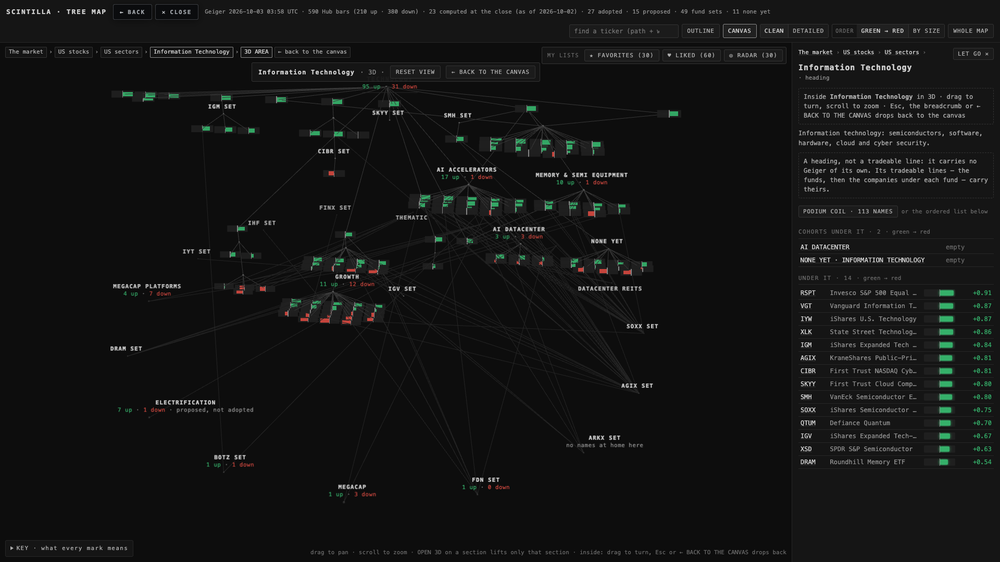
Technology opened (OPEN 3D), 1920. The tickers are painted on the bars by the bar's own shader where a bar is big enough; the far bars print none. In perspective 78 pairs of boxes still touch on the screen (T9: 366). Not met.
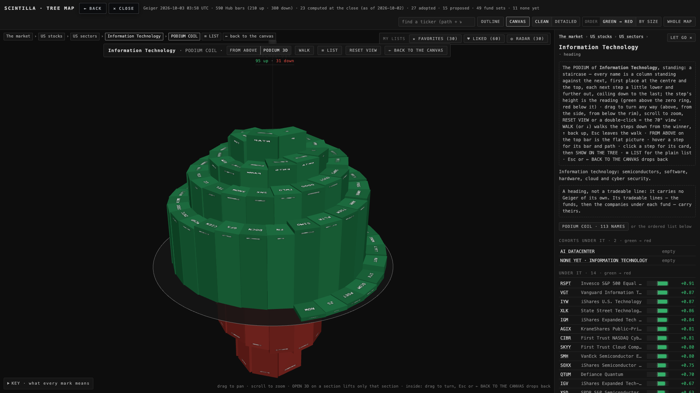
The Technology staircase from the sheet's camera (24°), 1920. The green snake stands on the zero base and coils down and out; the red snake hangs under it and coils down and in to the last name. 82 up, 31 down.From the side. Both halves: green above the grey base, red below it. Every ticker sits on its own step (reading face and outer face).
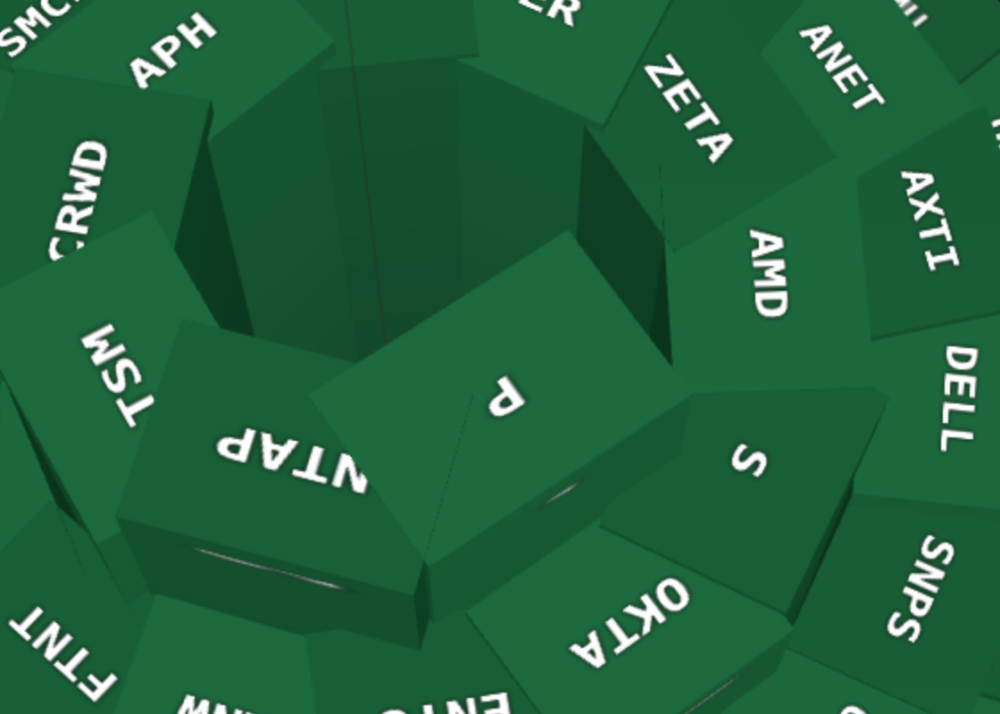
A close crop of the steps (one zoom step in). The tickers are painted on the treads; they turn with the stair and never float over another step. A word on the far side of the ring reads upside down, as a word painted on a floor does.
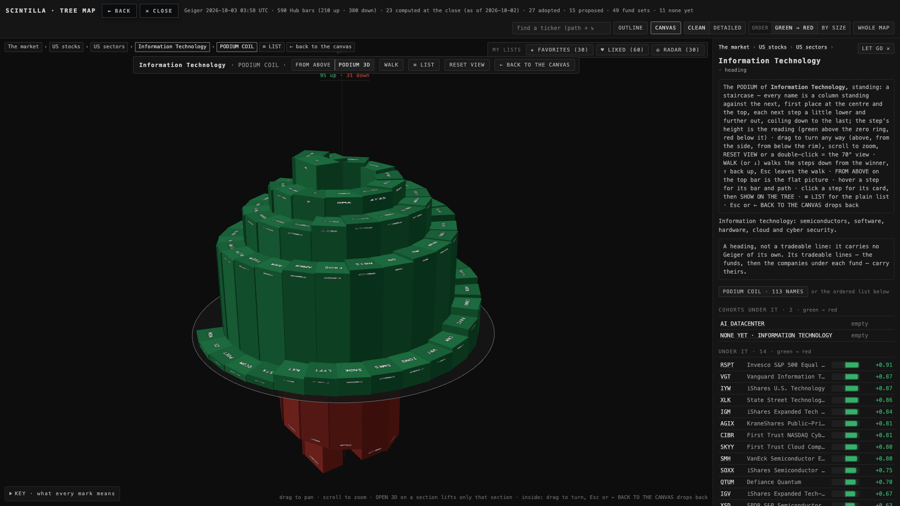
The view turned 90°. The labels moved with their steps; nothing re-faced the camera (no billboard, nothing vibrates).
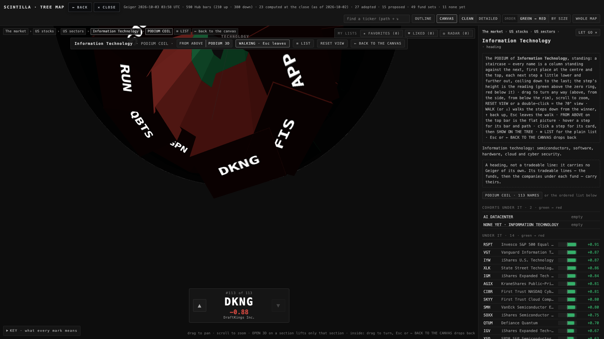
The walk at the last step (DKNG). On the red half the walk is the mirror: the eye stands under the reading face and looks along the hanging red steps; their tickers are painted on the undersides.
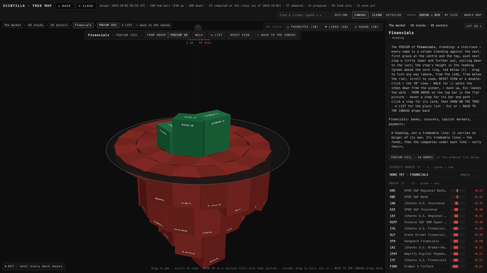
Financials from the side. 5 up, 39 down: a small green snake over a big red one. The two base radii differ (47 and 111 U), so the grey base at zero bridges them — Alan's "once it reaches the base towards zero it's flat".
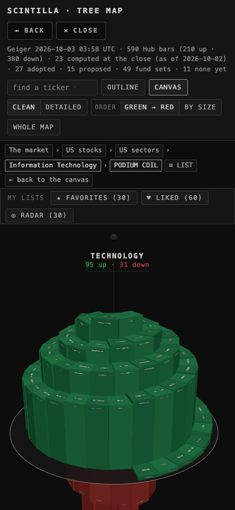
The phone. The same two snakes; the tickers on the steps are under the sheet's 30 px here and stay faint.
3 · THE NUMBERS · before (T9's page) → after, per screen
screen
picture
boxes touching (pairs)
box on the screen (px)
gap to the nearest box (px)
boxes per Mpx²
black share
DOM tickers floating
1920 @ 1
CLEAN whole map
2,572 → 0
60 × 18.8 → 20.8 × 6.5
0 → 1.3
320 → 320
0.81 → 0.90 (≤ 0.76)
125 → 0
1920 @ 1
Technology opened
366 → 78
60 × 18.8 → 41 × 13
0 → 0
83 → 83
0.886 → 0.904 (≤ 0.86)
33 → 0
1920 @ 1
Technology podium
steps touch by design
—
—
—
0.48 → 0.79 (≤ 0.55)
99 → 0
1680 @ 2
CLEAN whole map
2,919 → 0
60 × 18.8 → 18.2 × 5.7
0 → 1.1
377 → 377
0.81 → 0.92
76 → 0
1680 @ 2
Technology opened
367 → 78
60 × 18.8 → 40 × 12.6
0 → 0
102 → 102
0.888 → 0.909
32 → 0
1680 @ 2
Technology podium
steps touch by design
—
—
—
0.41 → 0.76
99 → 0
390
CLEAN whole map
6,355 → 0
60 × 18.8 → 8.1 × 2.5
0 → 0.5
2,876
0.42 → 0.82
9 → 0
390
Technology podium
—
—
—
—
0.36 → 0.62
69 → 0
The staircase, measured: pitch above zero = pitch below zero = H (Technology 216.53 U per unit of reading; Financials 219.4; LIKED 173.1); the k-th red step from its tip sits at exactly the k-th green step's radius and angle (max difference 0); every green step stands on zero, every red one hangs from it and descends inwards; neighbours on each spiral touch (gap ≤ 0). Labels: 113 of 113 tickers on the step mesh, 0 DOM tickers, no billboard. Tests: the Hub suite 1769 → 1775 tests; 8 failing before (the 5 known on live + 3 stale T8 pins) → the 5 known on live, with one visible todo for the targets not met.
4 · DECISIONS FOR ALAN (3)
1 · The whole map cannot be both "no touching" and "big Geigers" at one zoom. 613 boxes on a 1920 screen with 8 % of black between them print 21 px wide, with no ticker. The sheet's rule holds (0 touching, every screen) but the map is 90 % black and the bars are small. Recommendation: keep the rule, and make the home zoom one step in (the Technology quarter of the tree fills the screen, boxes 60 px with tickers); the whole map is then one wheel-out away. Or drop the whole-map black target to 0.90 and accept the zoom-out as a map of colours.
2 · The podium's home camera. The red snake hangs under the green one, so from 70° (T8/T9's home, "sounds like a good angle") it is hidden; the sheet sets 24° so both snakes show, and the picture is 79 % black because the tall diamond is framed whole. Recommendation: keep 24°, raise the fill (the parent's ball above the peak takes a fifth of the height) and let FROM ABOVE be the flat picture.
3 · The opened section in perspective. Boxes at different depths still overlap on the screen (78 pairs). Recommendation: the opened section becomes a flat picture at the section's zoom (the sheet's CLEAN rule, 0 touching) and 3D is kept for the podium only — where depth means something (the reading).
5 · WHAT WAS NOT DONE
The three black-share targets and the opened section's "0 touching" are not met (above). The "next zoom step" for the tickers on the whole map is the wheel's own step, not a fixed ladder of zooms. The no-reading names stand as grey slabs at zero past the red base (none today in Technology, Financials, LIKED). The podium's RESET VIEW text on the card still says "the 70° view".
Sources: deliverables/20261002/tree-standard/tree-standard.json (the sheet) · the page deliverables/20260929/tree-map/ (map3d.js, tickers-atlas.js, layout.js) · the walk proof-t10.mjs → shots/t10-before-proof.json, shots/t10-after-proof.json · tests tests/tree-standard.test.mjs.